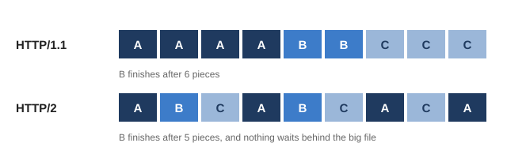

Modern HTTP
Since 2009, HTTP has been redesigned twice. Both times the meaning of HTTP stayed the same, but the way messages are carried over the network changed completely.
SPDY (2009-2016): The Experiment
In November 2009 Google engineers Mike Belshe and Roberto Peon announced SPDY ("speedy"), an experimental protocol to cut page load time. It kept HTTP's meaning but changed how messages were sent. Its main ideas were multiplexing, header compression, request prioritization, and required encryption.
SPDY was built into Chrome and Firefox and used by big sites like Google and Twitter. In 2012 the IETF chose SPDY as the starting point for HTTP/2, and Chrome removed SPDY in 2016. SPDY shows how a company experiment can become an open internet standard.
HTTP/2 (2015): A Faster Way to Carry the Same HTTP
HTTP/2 was published as RFC 7540 in May 2015 and revised as RFC 9113 in 2022. The main rule was to keep methods, status codes and headers the same and only change how data is formatted and sent.
- Binary framing: messages are split into small binary frames instead of text lines.
- Multiplexing: many requests and responses share one TCP connection at the same time.
- HPACK header compression: repeated headers cost only a few bytes.
- Prioritization: clients can say which files matter most.
- One connection per site instead of about six.

In the diagram, file A is large, B is small, and C is medium. With HTTP/1.1, small file B has to wait for all of A. With HTTP/2 the pieces are mixed, so B finishes after only five pieces. Every frame is labelled with a stream number so the browser can put the files back together.
Limits of HTTP/2
HTTP/2 fixed head-of-line blocking at the HTTP layer, but TCP still delivers bytes in strict order. If one packet is lost, every stream on the connection freezes until it is sent again. On lossy mobile networks HTTP/2 can even be slower than HTTP/1.1. Because TCP is built into operating systems and network equipment, it is very hard to change, so engineers built a new transport instead.
HTTPS and TLS: Making HTTP Private
Plain HTTP can be read by anyone between you and the server, for example on public Wi-Fi. HTTPS is HTTP sent inside an encrypted TLS connection. It gives confidentiality (only the two ends can read it), integrity (tampering is detected), and authentication (a certificate proves who the server is).
- 1995: Netscape releases SSL 2.0, the ancestor of TLS.
- 1999: the IETF standardizes TLS 1.0.
- 2012: HSTS lets websites require HTTPS.
- 2015-2016: Let's Encrypt starts giving out free certificates.
- 2018: TLS 1.3 is published and Chrome starts labelling HTTP sites "Not secure".
QUIC and HTTP/3 (2022)
Jim Roskind at Google designed QUIC in 2012-2013. It is a new transport protocol built on top of UDP, which every network already forwards, so it could be deployed without upgrading every router and operating system. QUIC was published as RFC 9000 in May 2021, and HTTP/3 was published as RFC 9114 in June 2022.
- Independent streams: if a packet for one file is lost, only that file waits.
- Faster setup: connection and encryption handshakes happen together, and returning visitors can send data right away (0-RTT).
- Connection migration: a phone moving from Wi-Fi to cellular can keep downloading.
- Encryption built in: TLS 1.3 is always part of QUIC.
Comparison of All HTTP Versions
| Version | Year | Format | Transport | Key addition | Main problem |
|---|---|---|---|---|---|
| HTTP/0.9 | 1991 | Text | TCP | GET and HTML only | No headers or status codes |
| HTTP/1.0 | 1996 | Text | TCP | Headers, status codes, POST | New connection for every file |
| HTTP/1.1 | 1997 | Text | TCP | Persistent connections, Host header, caching | Head-of-line blocking |
| HTTP/2 | 2015 | Binary | TCP | Multiplexing, HPACK | TCP head-of-line blocking |
| HTTP/3 | 2022 | Binary | QUIC over UDP | Independent streams, built-in TLS 1.3 | Some networks block UDP |
In all five versions, the basic idea is the same: the client sends a request and the server sends back a response.